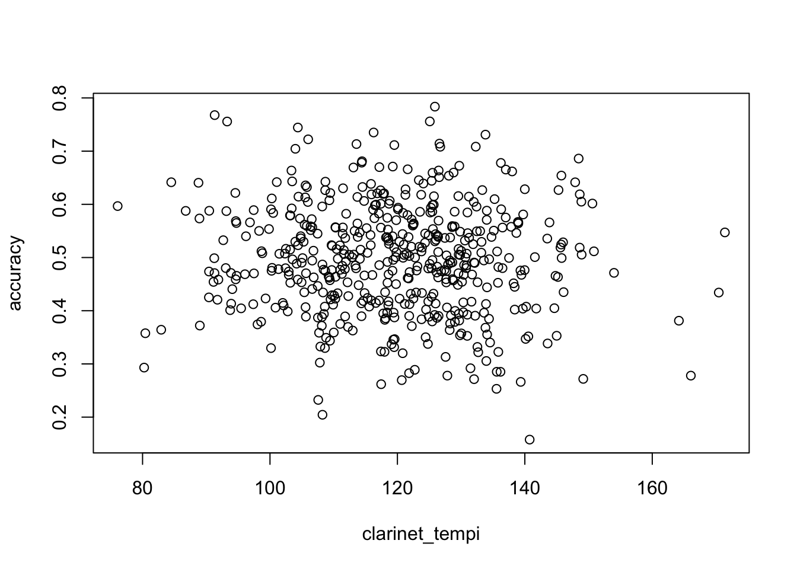

#### coming up with my data
my_model <- function(number = 100){
clarinet_tempi <- rnorm(number, 120, 15)
accuracy <- rnorm(number, .5, .1)
plot(clarinet_tempi, accuracy)
model <- lm(clarinet_tempi ~ accuracy)
return(summary(model))
}
my_model(500)
Call:
lm(formula = clarinet_tempi ~ accuracy)
Residuals:
Min 1Q Median 3Q Max
-46.549 -9.656 -0.248 10.016 45.727
Coefficients:
Estimate Std. Error t value Pr(>|t|)
(Intercept) 117.797 3.733 31.552 <2e-16 ***
accuracy 4.346 7.324 0.593 0.553
---
Signif. codes: 0 '***' 0.001 '**' 0.01 '*' 0.05 '.' 0.1 ' ' 1
Residual standard error: 15.33 on 498 degrees of freedom
Multiple R-squared: 0.0007065, Adjusted R-squared: -0.0013
F-statistic: 0.3521 on 1 and 498 DF, p-value: 0.5532